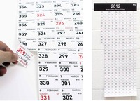
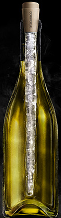

Cryoscope: previsión real del clima
Wed, 15 Feb 2012 09:30:00 +0000
El Cryoscope ha sido creado para simular el clima exterior y transmitirlo por contacto directo. Los datos climatológicos llegan a él a través de la web y una aplicación programada a tal efecto. Es esencial si se necesita saber la Continue reading.
El Cryoscope ha sido creado para simular el clima exterior y transmitirlo por contacto directo. Los datos climatológicos llegan a él a través de la web y una aplicación programada a tal efecto. Es esencial si se necesita saber la temperatura real de Kamchatka pero se vive en Valladolid: en esos casos, sacar el brazo por la ventana no sirve de nada.
En realidad, nunca sirve de nada. El tiempo siempre es agradable para el brazo, pero cuando llegas a salir de la casa, los midiclorianos se han reorganizado a tu alrededor y hace un frío de mil demonios. Así que lo ideal sería tocar el Cryoscope con el codo; si vemos que estornuda es que hay que ponerse bufanda.
Cryoscope visto en Geeks are sexy
¿Algo que comentar? [0] Tags: inventos, temperatura, tiempo
Homenaje de Vegeta a Whitney Houston
Wed, 15 Feb 2012 08:00:52 +0000
Whitney Houston murió el pasado fin de semana. He de ser sincero: nunca me gustó. Una voz tremenda, por supuesto, pero simplemente no me llegó a calar por diferencias de base. En cualquier caso, reconozco su buen hacer, así como Continue reading.
Whitney Houston murió el pasado fin de semana. He de ser sincero: nunca me gustó. Una voz tremenda, por supuesto, pero simplemente no me llegó a calar por diferencias de base. En cualquier caso, reconozco su buen hacer, así como lo hace Vegeta, de Dragon Ball, mientras aprovecha para decir lo que todos sabíamos. Lo mejor, como siempre, el final.
Visto en Geekosystem
¿Algo que comentar? [0] Tags: cantantes, Dragon Ball, homenaje, música
Calendario recortable “Carpe Diem”
Tue, 14 Feb 2012 09:10:49 +0000
Disfruta de cada día del año arrancando al final de la jornada el recuadrito correspondiente. Con el calendario de pared "Carpe Diem" podrás reflexionar sobre el uso que le has dado a esas 24 horas. Tiene un metro de altura Continue reading.

Disfruta de cada día del año arrancando al final de la jornada el recuadrito correspondiente.
Con el calendario de pared "Carpe Diem" podrás reflexionar sobre el uso que le has dado a esas 24 horas. Tiene un metro de altura y, poco a poco, irá desapareciendo hasta que el último trocito caiga el día 31 de Diciembre.

¿Algo que comentar? [1] Tags: calendarios, papel, recortables

QueLoVendan La tienda de regalos y gadgets divertidos - Cupón dto. 5% -> SOY_FAN_DE_NPC
Vagina en lata reloaded
Sun, 12 Feb 2012 20:34:16 +0000
Yo personalmente creí que el concepto de vagina en lata era insuperable, sin embargo esto lo supera. Porque si necesitas (o simplemente te apetece) un poco de sexo enlatado, ¿no sería mejor que además de hacerle de todo en tu Continue reading.
Yo personalmente creí que el concepto de vagina en lata era insuperable, sin embargo esto lo supera. Porque si necesitas (o simplemente te apetece) un poco de sexo enlatado, ¿no sería mejor que además de hacerle de todo en tu imaginación también pudieras ver el cuerpo de tus fantasías en el lugar que le correspondería?
Pues ahí está la gracia. Fleshlipad combina la vagina en lata con una especie de carcasa para el iPad. Así, mientras das rienda suelta a tus instintos puedes ponerle en la pantalla de tu iPad la imagen que quieras, y de quien quieras, y bueno... así la sensación puede ser más realista.
Antes de que pidáis que lo vendan... me temo que sólo es un concepto. Es decir, que no existe, pero no os preocupéis, que por lo visto Fleshligth, Inc también le ha parecido buena idea, y están en ello. Al fin, gracias a Dios, alguien combina el porno con el iPad...
Visto en Obvious Winner
¿Algo que comentar? [10] Tags: ipad, masturbacion, vagina
Auriculares que diferencian entre derecha e izquierda
Fri, 10 Feb 2012 17:00:54 +0000
Últimamente, distinguir entre derecha e izquierda se está convirtiendo en una labor difícil. Los acordes que tradicionalmente se asociaban a un lado pasan al otro, se confunden y, al final, la canción acaba siendo la misma en ambas partes. Pero Continue reading.
Últimamente, distinguir entre derecha e izquierda se está convirtiendo en una labor difícil. Los acordes que tradicionalmente se asociaban a un lado pasan al otro, se confunden y, al final, la canción acaba siendo la misma en ambas partes. Pero gracias al IGARASHI Design Interface Project y sus Universal Earphones esto se va a acabar. El dispositivo es muy sencillo: un sensor de proximidad detecta a qué distancia está la oreja y, si es menor a 30 mm, lo asigna a la oreja derecha y automáticamente el otro pasa a ser la izquierda. Por supuesto, hay que colocar uno, esperar el cambio, y entonces colocar el otro.
La duda reside en el concepto de derecha e izquierda que puedan tener los auriculares. Es decir, ¿es objetiva? ¿Puede haber una visión objetiva? ¿Qué datos ha barajado a la hora de definir las dos partes? Como dijera Innerarity (citando a otro que no recuerdo), estamos en la era de la sospecha. El dicho "cuando el listo señala al cielo, el tonto mira el dedo" ya no está vigente; ahora, el listo debe mirar al dedo, preguntarse quién es ese dedo y qué pretende y, sobre todo, qué o quién se esconde tras ese auricular y dónde nos quiere llevar. Si es a Beyoncé, yo paso.
Visto en Microsiervos
¿Algo que comentar? [3] Tags: auriculares, automático, canción, música, sensores
We do it for you…
Wed, 15 Feb 2012 09:02:37 +0000
Como siempre, con retraso, pero... Feliz San Ballantine's (o algo así) Everything we do... ¿Algo que comentar? [0] Tags: San Valentín
Como siempre, con retraso, pero... Feliz San Ballantine's (o algo así)
Everything we do...
¿Algo que comentar? [0] Tags: San Valentín
Coche con sistema de calefacción antiacompañantes
Tue, 14 Feb 2012 15:50:54 +0000
Una chimenea instalada dentro de un coche es, en principio, algo extraño. Pero si analizamos las posibles razones que han llevado a colocarla, descubriremos que puede ser algo incluso lógico. Un acompañante, en la práctica, sirve para tres cosas: dar Continue reading.
Una chimenea instalada dentro de un coche es, en principio, algo extraño. Pero si analizamos las posibles razones que han llevado a colocarla, descubriremos que puede ser algo incluso lógico.
Un acompañante, en la práctica, sirve para tres cosas: dar fuego, dar comida y dar conversación. Está claro que la chimenea da fuego y calienta alimentos susceptibles de ser comidos; el problema está en la conversación. Podemos deducir que los amigos del suizo que ha puesto la chimenea en su coche no eran muy habladores, o, quizás, todo lo contrario: eran tan densos que tuvo que inventar alguna excusa para no llevarlos. Esa excusa es la chimenea. Como un tipo que no hable no es molesto (aunque puede oler mal), me voy a decantar por la segunda opción: sus amigos son insoportables. Pero, ¿qué clase de amigos podrían aúnan la habladuría extrema con la necesidad de que los lleven a algún sitio? ¿Qué clase de amigos serían sustituidos sin piedad por una chimenea? Está claro: unos amigos que pidan cigarrillos en lugar de darlos, que pidan comida en lugar de darla y que hablen mucho, mucho, mucho. O sea, unos amigos poetas.
Esa es mi conclusión. Además, sustituir a una persona por una chimenea es algo bastante poético porque combina la traición personal con la sustitución del trabajo humano por la maquinaria, así que es probable que los poetas estén bastante inspirados.
Visto en Likecool
¿Algo que comentar? [3] Tags: amigos, chimeneas, coches, suiza
Tapón enfriador
Mon, 13 Feb 2012 13:56:18 +0000
Si queremos "enfrescar" (enfriar+refrescar) nuestra bebida, pero no queremos que se agüe tenemos este Tapón que introducimos en el interior de la botella. El tapón parece una estalagmita y está relleno de un gel que una vez congelado enfriará nuestras Continue reading.
Si queremos "enfrescar" (enfriar+refrescar) nuestra bebida, pero no queremos que se agüe tenemos este Tapón que introducimos en el interior de la botella. El tapón parece una estalagmita y está relleno de un gel que una vez congelado enfriará nuestras bebidas sin alterar el sabor de las mismas. Permite liberar a la mesa del incómodo cubo del hielo, lo cual es positivo, porque dado el tamaño de los pisos actuales las mesas se resienten y cada vez las están haciendo más pequeñas.
Supongo que la botella debe estar fría y este tapón ayudará a que no se caliente, porque debemos introducirlo después de haber bebido un vaso (recordemos a Arkímedes). Pero si queremos ahorrarnos un dinero podemos realizar nuestra versión casera, que sería sencillamente meter un burmar-flax en la botella; conseguiremos el mismo efecto y podremos añadir una nota de color. El inconveniente es que si se rompe el plástico hay tirar la bebida o embotellarla como elixir bucal.
Eso si, hay que tener cuidado cuando lo saquemos de la botella, ya que si estamos un poco achispados podemos sacarle un ojo a alguien.
Pd. Los burmar-flax son unos polos, básicamente agua con colorante, dentro de una funda de plástico que se congelan en casa.
Visto en Book of Joe.
¿Algo que comentar? [3] Tags: refrigerar, tapones
Pasador de páginas
Sat, 11 Feb 2012 11:50:19 +0000
Uno de esos inventos absurdos como los del famoso profesor Franz de Copenhague. Un pasador de páginas para el periódico de la mañana. Absurdo pero eficaz. Permanecemos a la espera de la fabricación del modelo móvil para llevar en el Continue reading.
Uno de esos inventos absurdos como los del famoso profesor Franz de Copenhague. Un pasador de páginas para el periódico de la mañana. Absurdo pero eficaz.
Permanecemos a la espera de la fabricación del modelo móvil para llevar en el autobús por las mañanas.
Visto en Bits&Pieces.
¿Algo que comentar? [12] Tags: inventos, libros, videos
Tableta de chocolate poliédrica
Fri, 10 Feb 2012 15:05:16 +0000